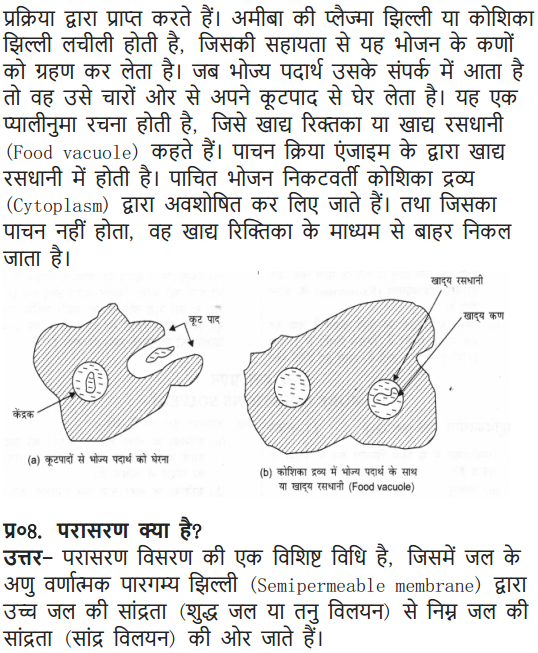

NCERT Solutions Class 9 Science Chapter 5 The Fundamental Unit of Life – Here are all the NCERT solutions for Class 9 Science Chapter 5. This solution contains questions, answers, images, step by step explanations of the complete Chapter 5 titled The Fundamental Unit of Life of Science taught in class 9. If you are a student of class 9 who is using NCERT Textbook to study Science, then you must come across Chapter 5 The Fundamental Unit of Life. After you have studied lesson, you must be looking for answers of its questions. Here you can get complete NCERT Solutions for Class 9 Science Chapter 5 The Fundamental Unit of Life in one place. For a better understanding of this chapter, you should also see Chapter 5 The Fundamental Unit of Life Class 9 notes , Science.
NCERT Solutions For Class 9 Science Chapter 5 The Fundamental Unit of Life
Topics and Sub Topics in Class 9 Science Chapter 5 The Fundamental Unit of Life:
- The Fundamental Unit of Life
- What are Living Organisms Made Up of?
- What is a Cell Made Up of? What is the Structural Organisation of a Cell?
These solutions are part of NCERT Solutions for Class 9 Science. Here we have given Class 9 NCERT Science Text book Solutions for Chapter 1 matter in our Surroundings.
IN-TEXT QUESTIONS SOLVED
NCERT Textbook for Class 9 Science – Page 59
Question 1. Who discovered cells, and how?
Answer: Robert Hooke discovered cells in 1665 while examining a thin slice of cork through a self-designed microscope. He saw that the cork resembled the structure of a honey comb consisting of many little compartments. These small boxes are called cells.
More Resources for CBSE Class 9
- NCERT Solutions
- NCERT Solutions Class 9 Maths
- NCERT Solutions Class 9 Social Science
- NCERT Solutions Class 9 English
- NCERT Solutions Class 9 Hindi
- NCERT Solutions Class 9 Sanskrit
- NCERT Solutions Class 9 IT
- RD Sharma Class 9 Solutions
Question 2. Why the cell is called the structural and Junctional unit of life?
Answer: A cell is capable of independently carrying out all necessary activities of life. So, they are called basic or functional unit of life.
Formulae Handbook for Class 9 Maths and ScienceEducational Loans in India
Class 9 Science NCERT Textbook – Page 61
Question 1. How do substances like C02 and water move in and out of the cell? Discuss.
Answer: CO2 moves by diffusion and H2O move by osmosis through cell membrane.
Question 2. Why is the plasma membrane called a selectively permeable membrane?
Answer: It is called selectively permeable membrane because it allows the entry and exit of some substances, not all.
Class 9 Science NCERT Textbook – Page 63
Question 1. Fill in the gaps in the following table illustrating differences between prokaryotic and eukaryotic cells.
Answer:

NCERT Textbook for Class 9 Science – Page 65
Question 1. Can you name the two organelles we have studied that contain their own genetic material?
Answer: The two organelles which have their own genetic material are:
1. Mitochondria 2. Plastids
Question 2. If the organisation of a cell is destroyed due to some physical or chemical influence, what will happen?
Answer: The cell will not be able to revive and lysosomes will digest it.
Question 3. Why are lysosomes known as suicide hags?
Answer: When the cell gets damaged, lysosomes may burst, and the enzymes digest their own cell. Therefore lysosomes are known as suicide bags.
Question 4. Where are proteins synthesised inside the cell?
Answer: The proteins are synthesised in the ribosomes that are also known as protein factories.
Questions From NCERT Textbook for Class 9 Science
Question 1. Make a comparison and write down ways in which plant cells are also different from animal cells.
Answer:

Question 2. How is prokaryotic cell different from a eukaryotic cell?
Answer: Prokaryotic cell is generally smaller in size (1-10 pm), nuclear region is poorly defined, the cell organelles are not membrane-bound and has a single chromosome.
Eukaryotic cell is generally larger in size (5-100 pm), nuclear region is well defined with nuclear membrane. Membrane-bound cell organelles are present and has more than one chromosome.
Question 3. What would happen if the plasma membrane ruptures or breaks down?
Answer: If plasma membrane ruptures or breaks down then molecules of some substances will freely move in and out.
Question 4. What would happen to the life of a cell if there was no Golgi apparatus?
Answer: Golgi apparatus has the function of storage, modification and packaging of the products in vesicles. If there were no Golgi bodies, packaging and dispatching of materials synthesised by the cell will be stocked.
Question 5. Which organelle is known as the powerhouse of the cell? Why?
Answer: Mitochondria is known as powerhouse of the cell because it releases the energy required for different activities of life.
Question 6. Where do the lipids and proteins constituting the cell membrane get synthesised?
Answer: Lipids and proteins are synthesised in ER [Endoplasmic Reticulum].
Question 7. How does Amoeba obtain it’s food?
Answer: Amoeba take it’s food by the cell membrane which forms the food vacuole.
Question 8. What is osmosis?
Answer: Osmosis is the process of movement of water molecule from a region of higher water concentration through a semi-permeable membrane to a region of lower water concentration.
Question 9. Carry out the following osmosis experiment:
Take four peeled potato halves and scoop each one out to make potato cups, one of these potato cups should be made from a boiled potato. Put each potato cup in a trough containing water.
Now,
(a) Keep cup A empty
(b) Put one teaspoon sugar in cup B
(c) Put one teaspoon salt in cup C ‘
(d) Put one teaspoon sugar in the boiled potato cup D
Keep these for two hours. Then observe the four potato cups and answer the following:
(i) Explain why water gathers in the hollowed portion of B and C.
(ii) Why is potato A necessary for this experiment?
(iii) Explain why water does not gather in the hollowed out portions of A and D.
Answer:

(i) Water gathers in B and C because in both the situations there is difference in the concentration of water in the trough and water in the cup of Potato. Hence, osmosis takes place as the potato cells act as a semi-permeable membrane.
(ii) Potato A is necessary for this experiment for comparison, it acts as a control.
(iii) Water does not gather in the hollowed out portions of A and D. As cup of A does not have change in the concentration for water to flow. For osmosis to occur one of the concentration should be higher than the other.
In cup D, the cells are dead and hence the semi-permeable membrane does not exists for the flow of water and no osmosis takes place.
NCERT Solutions for Class 9 Science Chapter 5 The Fundamental Unit of Life (Hindi Medium)


MORE QUESTIONS SOLVED
NCERT Solutions For Class 9 Science Chapter 5 Multiple Choice Questions
Choose the correct option:
1. The inner membrane of mitochondria is folded because
(a) it has no space inside (b) it helps in transportation of material
(c) it increases the surface area (d) it stores more food
2. Proteins are formed in
(a) Golgi bodies (b) nucleus
(c) plastids (d) ribosomes
3. The organelle that helps in the membrane biogenesis is
(a) lysosome (b) Golgi bodies
(c) endoplasmic reticulum (d) ribosome
4. The solution in which a cell will gain water by osmosis is termed as
(a) isotonic solution (b) hypertonic
(c) hypotonic solution (d) both (a) and (b)
5. The root hair absorbs water by the process called
(a) diffusion (b) osmosis
(c) endocytosis (d) plasmolysis
6. The animal cell which does not possess nucleus is
(a) egg of hen ‘ (b) white blood cell
(c) red blood cell (d) nerve cell
7. The nucleus of the cell was discovered by
(a) Robert Hooke (b) Leeuwenhoek
(c) Robert Brown (d) Purkinje
8. The plant cells are more rigid than the animal cell due to
(a) cell wall (b) vacuoles
(4 plastids (d) both (a) and (b)
9. The opening and closing of stomata is due to
(a) sunlight (b) osmosis
(4 plasmolysis (d) endocytosis
10. The cells with jio membrane bound organelles, and the chromosomes are composed of only nucleic acids are
(a) plant cells (b) animal cells
(c) prokaryotic cells (d) eukaryotic cells
Answer. 1—(c), 2—(d), 3—(4. 4—(c), 5—(b), 6—(c), 7—(4, 8—(d), 9—(b), 10—(c).
NCERT Solutions For Class 9 Science Chapter 5 Very Short Answer Type Questions
Question 1. What are plastids? Name the different types of plastids found in a plant cell.
Answer: Plastids are organelles found only in plants. They are:
(a) Chloroplast-Containing chlorophyll
(b) Chromoplast-Containing carotenoids and xanthophyll (coloured plastids)
(c) Leucoplast-Wllite or colourless plastids
Question 2. What is plasma membrane made up of?
Answer: Plasma membrane is made up of proteins and lipids.
Question 3. What did Robert Hooke observed first in cork cell?
Answer: Robert Hooke observed that cork consists of box like compartments which formed a honeycomb structure.
Question 4. Name the autonomous organelles in the cell.
Answer. Chloroplasts and mitochondria are the autonomous organelles in the cells.
Question.5. What does protoplasm refer to?
Answer: Protoplasm refer to cytoplasm and nucleus.
Question 6. Name two cells which keep changing their shape.
Answer: Amoeba and white blood cells.
Question 7. Name the smallest cell and the longest cell in human body.
Answer: The smallest cell is the red blood cell or sperm cell in male. Longest cell is the nerve cell.
Question 8. Name 3 features seen/present in almost every cell.
Answer: Plasma membrane, nucleus and cytoplasm.
Question 9.What is diffusion?
Answer: When gases like C02, 02, move across the cell membrane, this process is called diffusion.
Question 10.What is osmosis? This takes place from high water concentration to low water concentration.
Answer: The movement of water molecules through a selectively permeable membrane is called osmosis. This takes place from high water concentration to low water concentration.
Question 11. What is the full form of DNA?
Answer: DNA —> Deoxyribo Nucleic Acid.
Question 12. What is the Junction of chromosome?
Answer: Chromosomes contain information for the inheritance of features from parents to next generation in the form of DNA molecules.
Question 13. Name the organelles present in liver of animals for detoxifying many poisons and drugs.
Answer: In the liver of animal cells smooth endoplasmic reticulum helps in detoxifying many poisons and drugs.
Question 14. What is the energy currency of the cell?
Answer: ATP—Adenosine Triphosphate.
Question 15. What is the function of ribosome?
Answer: Ribosomes help in protein synthesis.
Question 16. Where are genes located in the cell?
Answer: Genes are located in the chromosomes in the nucleus of the cell.
Question 17. Name the cell organelles that helps in packaging?
Answer: Golgi apparatus.
Question 18. Name the cell organelle which helps in the transportation of material.
Answer: Endoplasmic reticulum.
Question 19. Name the cell organelle due to which leaves, flowers and fruits get their colour.
Answer: Chromoplast.
Question 20. Name the cell organelle which helps in the formation of lysosome.
Answer: Golgi apparatus.
Question 21. Name the cleansing organelle in the cell.
Answer: Lysosomes.
Question 22. Name two cells with cell wall.
Answer: Onion cell (plant cell) and fungi.
Question 23. Why does mitochondria have largely folded inner membrane?
Answer: Mitochondria is the site for cellular respiration and provides energy to the cell. The largely folded inner membrane provides the increased surface area for ATP-generating chemical reactions.
Question 24. Which organelle makes the digestive enzyme of lysosome?
Answer: Rough endoplasmic reticulum makes the digestive enzyme of lysosomes.
Question 25. What are cisterns?
Answer: The golgi bodies consist Of a system of membrane-bound vesicles arranged in stacks called cisterns.
NCERT Solutions For Class 9 Science Chapter 5 Short Answer Type Questions
Question 1. State two conditions required for osmosis.
Answer: (i) The difference in the concentration of water, one should have higher concentration than the other.
(ii) Semi-permeable membrane is also required through which water will flow.
Question 2. What is plasmolysis?
Answer: When a living plant cell loses water through osmosis there is shrinkage or contraction of the contents of the cell away from the cell wall. This phenomenon is known as plasmolysis.
Question 3. How does fungi and bacteria can withstand much greater changes in the surrounding medium than animal cells?
Answer: The cell wall present in fungi and bacteria permits these cells to withstand very dilute external medium without bursting.
The cells take up water by osmosis, swells, and builds the pressure against the cell wall. The wall exerts an equal pressure against the swollen cell. It is because of the cell wall, such cells can withstand much greater changes in the surrounding medium than animal cells.
Question 4. Give the function of nuclear membrane.
Answer: The nuclear membrane present as outer covering in the nucleus allows the transfer of material inside and out of the nucleus to cytoplasm.
Question 5. Name the cell-organelles that have their own DNA and ribosomes.
Answer: The cell organelles with their own DNA and ribosomes are mitochondria and plastids.
Question 6. State the difference between smooth endoplasmic reticulum and rough endoplasmic reticulum.
Answer:

Question 7. What is endocytosis?
Answer: The cell membranes flexibility allows the cell engulf in food and other material from its external environment. This process is known as endocytosis. E.g., Amoeba acquires its food through such processes.
Question 8. What is the function of vacuoles?
Answer: Vacuoles are storage sacs for solid or liquid content. In plant cells it provides turgidity and rigidity to the cell. In single-celled organisms vacuoles store food, e.g., Amoeba.
Question 9. When we put raisins in water, why do they swell?
Answer: Raisins are dry with less water inside, when they are kept in water, osmosis takes place, water flows through the cell wall, cell membrane of the raisins and therefore it swells.
Question 10. Why are lysosomes called suicidal bags?
Answer: Lysosomes contain digestive enzymes in it and helps in the cleaning of cell by digesting any foreign materials entering the cell, such as bacteria, food and old cell organelles.
When the lysosomes burst, the digestive enzyme digest its own cell. Hence it is called as suicidal bag.
Question 11. What is nucleoid?
Answer: The nuclear region in some cells are poorly defined due to the absence of a nuclear membrane, it contains only nucleic acid. This undefined nuclear region with nucleic acid in it is called nucleoid.
Question 12. What is the role, of cell organelles in the cell?
Answer: Each kind of cell organelles performs a specific function such as making new material, clearing of the waste, transporting material, etc.
Question 13. Label the figure and answer the questions:
(i) A – It is the packaging organelle
(ii) B – Provides energy
(iii) C – helps in the transport of material
(iv) D – Carries the information.
Answer. (i) A – Golgi body (ii) B – Mitochondria
(iii) C – Endoplasmic reticulum (iv) D – Nucleus
Question 14. What is the function of nucleus in a cell?
Answer: The nucleus plays a very important role in the reproduction of cells. It also helps the single cell to divide and form two new daughter cells.
It plays an important role in determining how the cell will develop and what form it will exhibit at maturity, by directing the chemical activities of the cell.
Question 15. What is the Junction of plastids?
Answer: Plastids are present only in plant cells. There are two types of plastids chromoplasts (coloured plastids) and leucoplasts (white or colourless)
Chromoplast—Consists of coloured pigments and gives different colours to flowers, fruits and leaves. The green colour pigment present in leaf is called chlorophyll which helps in the photosynthesis and a plastid with chlorophyll is called chloroplast.
Leucoplast—It stores starch, oil and protein granules in it.
Question 16. Do vacuoles store some material? If yes, name them.
Answer: Yes, vacuoles also store some important substances required in life of the plant cell. These are amino acids, sugars, various organic acids and some proteins. In some unicellular organisms, e.g. Amoeba, vacuoles also store food.
Question 17. Explain the structure and function of Golgi bodies.
Answer: Structures: Golgi bodies consist of a system of membrane-bound vesicles arranged in stacks parallel to each other called cisterns. These membranes have connections with the membrane of endoplasmic reticulum (ER).
Functions:
(1) The material synthesised near the ER is packaged and dispatched to various target inside and outside the cell through Golgi apparatus.
(2) It also stores, modifies and helps in the packaging of products in vesicles.
(3) In some cases, complex sugars may be made from simple sugars in it.
(4) It also helps in the formation of lysosomes.
Question 18. What are ribosomes? Where are they located in the cell? What is their function?
Answer: Ribosomes are spherical organelles present in the cell which are either freely distributed in the cytoplasm or may be attached to the endoplasmic reticulum.
It consists of ribosomal RNA (Ribonucleic acid) and proteins.
Functions of Ribosomes: It helps in the synthesis of proteins.
Question 19. What is the difference in chromatin, chromosomes and gene?
Answer: (1) Chromatin: It is a fine network of thread-like structure made up of DNA or RNA. It gets condense to form chromosomes.
(2) Chromosome: The chromosomes are made from chromatin material and are located iri the cell.
(3) Genes are found in chromosomes.
Question 20. Why do plant cells have more in number and big-sized vacuoles as compared to the animal cells?
Answer: Plant cells attain turgidity and rigidity due to the more number of vacuoles as well as large-sized vacuoles help the plant cells to withstand the wear and tear, external environmental conditions.
They also help in the storage of essential material required by plants for their growth like amino acids, sugar and various organic substances.
Question 21. Explain the following terms:
(a) Plasma membrane
(b) Cytoplasm
(c) Nucleus.
Answer: (a) Plasma membrane: It is a thin membrane which controls the passage of materials in and out of the cell. It is also called as selectively permeable membrane. It makes the outer boundary of the cell and is made up of lipo-protein,
(b) Cytoplasm: It is transparent jelly-like thick substance present in the cell. It makes the ground of the cell in which all the cell organelles are suspended.
(c) Nucleus: It is a double-layered membrane structure which contains chromosomes required for the inheritance of characteristics from one generation to the other.
Question 22. What is membrane biogenesis?
Answer: The endoplasmic reticulum helps in the manufacture of proteins and fat molecules or lipids which are important for the cell function. These proteins and lipids help in the building of the cell membrane. This process is known as membrane biogenesis.
Question 23. Which organelle is known as powerhouse of the cell?
Answer: Mitochondria is known as powerhouse of the cell because they store energy in the form of ATP. [Adenosine Triphosphate]
Question 24. What are genes?
Answer: Gene is a segment of DNA. They are located on chromosomes in linear fashions. One gene may perform one or more function. Genes are carrier of genetic codes.
Question 25. Draw various cells of human body.
Answer:
NCERT Solutions For Class 9 Science Chapter 5 Long Answer Type Questions
Question 1. Give five points of differences between plant cell and animal cell.
Answer:

Question 2. Give five points of differences between prokaryotic cell and eukaryotic cell.
Answer:

Question 3. Draw a neat labelled diagram of plant cell and label its parts.
Answer:

Question 4. Draw a neat labelled diagram of animal cell.
Answer:
Question 5. Name the cell organelle for the following:
(a) Present only in plant cell, provides strength and rigidity to the cell.
(b) It is the site for lipids synthesis and helps in detoxification of drugs.
(c) The inner membrane is folded to form cristae, it has its own DNA and proteins.
(d) It helps in the formation of lysosomes.
(e) It imparts colour to the fruit and flowers.
Answer: (a) Cell wall
(b) Smooth endoplasmic reticulum
(c) Mitochondria
(d) Golgi apparatus
(e) Chromoplast
NCERT Solutions For Class 9 Science Chapter 5 Value-Based Questions
Question 1. Vasu was helping his mother in laying the table when they had some guest for dinner. Vasu was about to sprinkle salt on salad for dressing. His mother stopped him from doing so and told him that it is too early to sprinkle salt on the salad, he should do so only when they are seated for having the dinner.
(a) What would happen if salt is sprinkled on the salad?
(b) Which property of cells is seen in adding salt to it?
(c) What value of Vasu is seen?
Answer: (a) On sprinkling of some salt on the salad, the salad will release water.
(b) The salt outside the salad acts as hypertonic solution as it has less water concentration and therefore the cell looses water by osmosis.
(c) Vasu showed the value of being very helpful, caring and responsible.
Question 2. Anu is a five year old girl who joined the swimming classes. After the first class she was worried when she saw her wrinkled fingers. She asked her elder sister about the wrinkling and shrinking of her fingers. Her sister explained Anu why it was so.
(a) Why did the fingers wrinkle after swimming?
(b) What caused the shrinking/wrinkling of fingers?
(c) What value of Anu is seen in the above cast?
Answer: (a) Fingers wrinkled because the cells of the skin lost some water.
(b) This happened because of the difference in the concentration of water in the skin cells and swimming pool’s water.
(c) Anu showed the value of aware citizen and a good learner who clarifies the doubts.
Question 3. Two sailors got marooned on the island, both of them were very thirsty and one of the sailors tried to drink sea water. The other sailor immediately stopped him from drinking the salty water of sea and suggested to wait for some help, stay calm and patient.
(a) What would happen if the sailor drinks salty water?
(b) What is osmosis?
(c) What value of sailors is reflected in the above act?
Answer: (a) On drinking sally water, exosmosis in the intestine will cause dehydration and vomiting.
(b) The movement of water molecules through a permeable membrane is called osmosis.
(c) Sailors showed the value of being patient, composed, empathy and determination.
Question 4. Sachin’s mother wanted to use some eggs for incubation. Sachin helped his mother in separating rotten and spoilt eggs from the good ones. He took a bucket of water to separate them.
(a) How can one separate the rotten eggs from the good ones using water?
(b) What is the shell of egg made up of?
(c) What value of Sachin is seen in this act?
Answer: (a) We can separate the rotten eggs by dipping them in water. The eggs that will float in water are rotten eggs and the one that sinks are good one.
(b) Egg shell is made up of calcium carbonate.
(c) Sachin showed the value of being helpful, responsible behaviour.